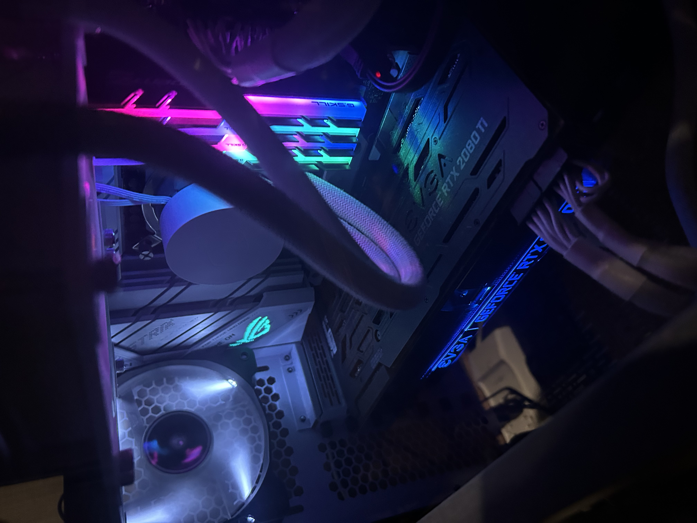

The Start
I have been playing games since I was a really young age. It all started with the game called
Pinball
you used to find installed in really old computers along with the very first Minesweeper game. I was
always fond of games in general, whether digital or in real life.
There was a point in my life where sports took over, but I eventually went back to video games. It
was
during high school and after high school where I really got into gaming more because of the game
HALO Reach.
This was the starting point for my console gaming or gaming in general.
The Beginning of the End

When my family moved to Canada, my PC journey began, and my love for video games grew even more.
Riot Games' League of Legends fueled this passion, and I became addicted to the game.
After earning money from part-time jobs, I built my first PC in 2018 and upgraded it in 2021.
The image below is my current PC build, updated earlier this year. I still play League of
Legends,
and I believe this game will never leave me, along with sports games like NBA. Even when I'm
old,
I know I'll still be gaming as long as my love for it remains.